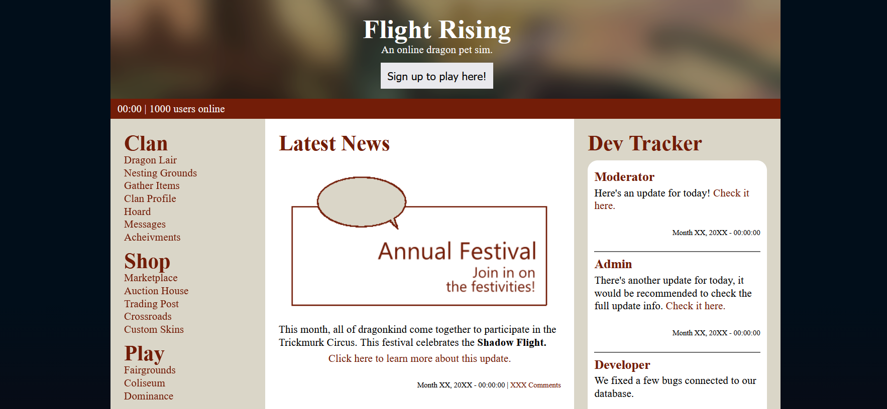
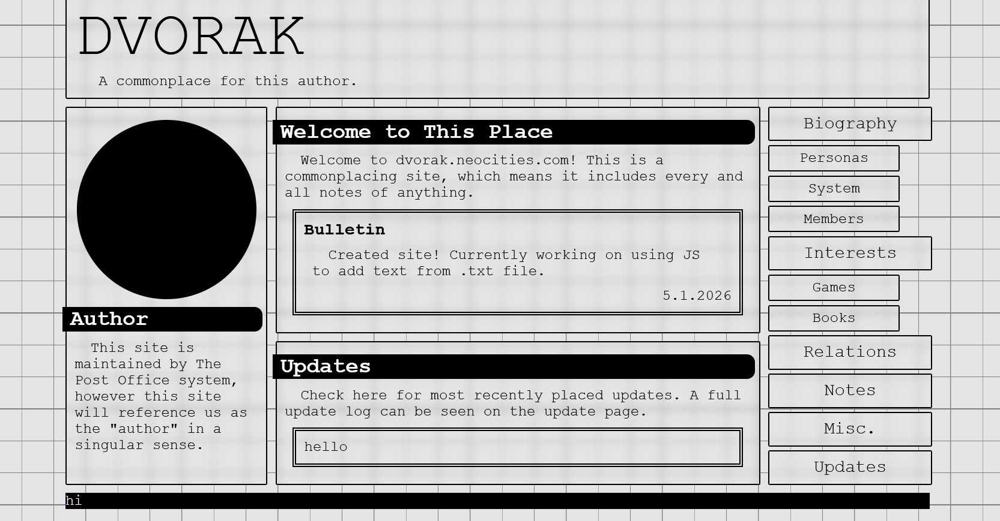
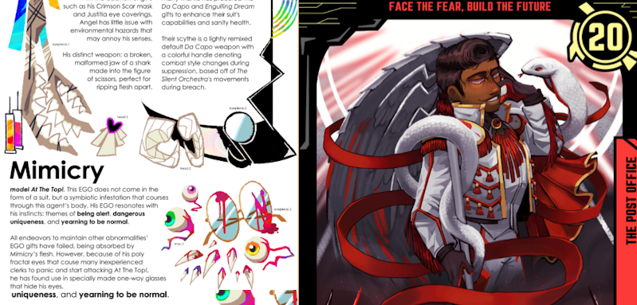

Site Recreation

Static site recreated from prexisting site.
HTML | CSSMy name is Mercedes "Alessandra" Cruz and I am a software engineering student at the University of Montana and digital illustrator with 2+ years of professional experience. I currently provide illustration services on proposal through VGen. My style focuses on abstract and geometric design.
Here are my recent projects. Click on the card buttons for more details on each project.

Static site recreated from prexisting site.
HTML | CSS
Personal Neocities site for sandboxing. Unfinished.
HTML | CSS View Details
Two pieces for a collaborative fandom zine.
Illustration View DetailsBelow are accounts and platforms you can contact me through.
mercedesalesscruz@gmail.com | My business email. Use this email to contact me for general inquiries.
github.com/Quintenzyl | My GitHub page.
vgen.co/justyourloss | My VGen page. If you are interested in my current illustration services, contact me on this platform.
Click the button below to access a PDF of my resume.
Download Resume